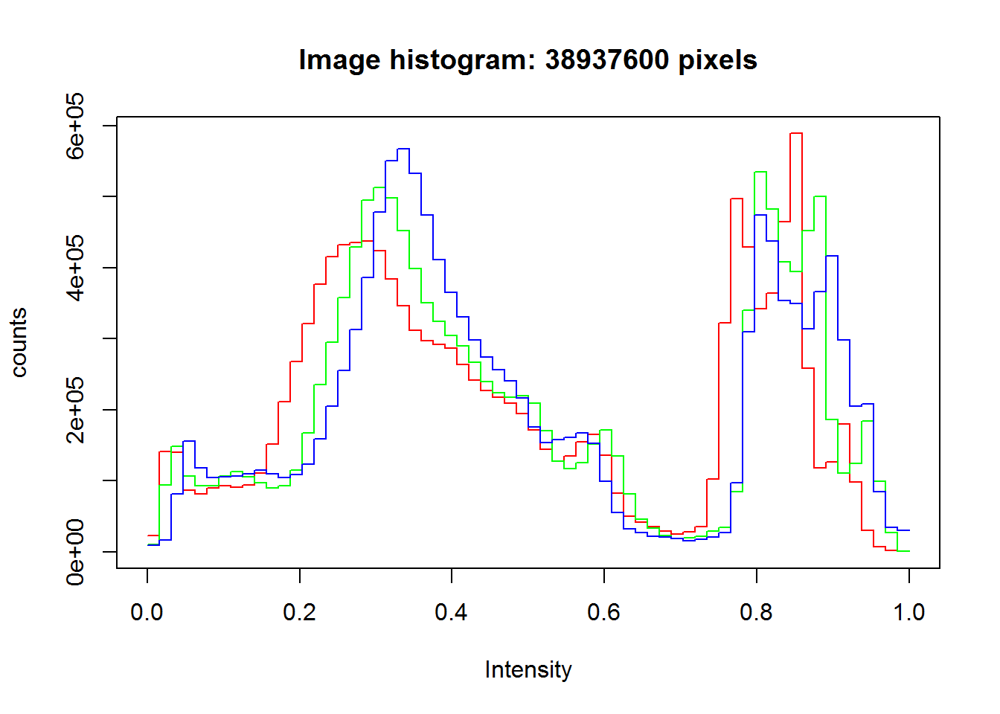
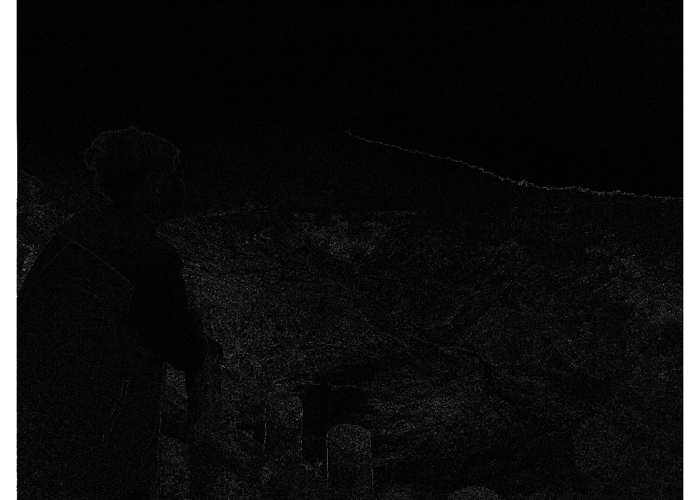

Melakukan instalasi package EBImage dengan menuliskan kode berikut :
if (!requireNamespace("BiocManager", quietly = TRUE))
install.packages("BiocManager")
BiocManager::install("EBImage")## Bioconductor version 3.12 (BiocManager 1.30.10), R 4.0.2 (2020-06-22)## Installing package(s) 'EBImage'## package 'EBImage' successfully unpacked and MD5 sums checked
##
## The downloaded binary packages are in
## C:\Users\LENOVO\AppData\Local\Temp\RtmpYHXd1i\downloaded_packages## Old packages: 'BiocManager', 'Matrix', 'xfun'Tahap ini adalah tahap dimana kita mengatur lokasi tempat gambar yang akan dieksekusi berada (biasanya satu folder dalam file project).
#set lokasi kerja
setwd("C:/Users/LENOVO/My Documents/KULIAHKU/SEMESTER 2/Linear Algebra/EBImage/")Memanggil package yang sudah diinstall di tahap 1, yaitu package EBImage.
library(EBImage)## Warning: package 'EBImage' was built under R version 4.0.3Dan yang terakhir, kita perlu melakukan assign (import)pada fungsi readImage dengan judul photo yang sudah ditaruh di folder set kerja dan memberinya nama misal Image.
Image <- readImage('wisnu2.jpg')Langkah yang dilakukan untuk menampilkan adalah dengan cara berikut :
display(Image) Langkah yang dilakukan untuk menampilkan sifat gambar yaitu merupakan spesifikasi gambar dan spesifikasi berupa matriks adalah dengan cara berikut ini :
print(Image)## Image
## colorMode : Color
## storage.mode : double
## dim : 4160 3120 3
## frames.total : 3
## frames.render: 1
##
## imageData(object)[1:5,1:6,1]
## [,1] [,2] [,3] [,4] [,5] [,6]
## [1,] 0.9215686 0.9215686 0.9176471 0.9098039 0.9058824 0.9058824
## [2,] 0.9098039 0.9137255 0.9176471 0.9176471 0.9098039 0.9098039
## [3,] 0.9098039 0.9137255 0.9176471 0.9176471 0.9176471 0.9176471
## [4,] 0.9215686 0.9176471 0.9098039 0.9098039 0.9176471 0.9215686
## [5,] 0.9215686 0.9176471 0.9137255 0.9098039 0.9137255 0.9137255Histogram gambar adalah suatu grafik yang akan menahistmpilkan banyak hal bisa berupa kecerahan (brightness), kontas (contrast), warna (color) dari sebuah gambar. Cara menampilkan yaitu dengan cara berikut ini :
hist(Image)
Image1 <- Image + 0.2
Image2 <- Image - 0.2
par(mfrow= c(1,2))
plot(Image1)
plot(Image2)Image3 <- Image * 0.5
Image4 <- Image * 2
par(mfrow= c(1,2))
plot(Image3)
plot(Image4)Image5 <- Image ^ 2
Image6 <- Image ^ 0.7
par(mfrow= c(1,2))
plot(Image5)
plot(Image6)display(Image[50:330, 0:250,])Imagetr <- translate(rotate(Image, 45), c(50, 0))
display(Imagetr)colorMode(Image) <- Grayscale
display(Image)## Only the first frame of the image stack is displayed.
## To display all frames use 'all = TRUE'.fHigh <- matrix(1, nc = 3, nr = 3)
fHigh[2, 2] <- -8
Image.fHigh <- filter2(Image, fHigh)
display(Image.fHigh)## Only the first frame of the image stack is displayed.
## To display all frames use 'all = TRUE'.
fLow <- makeBrush(21, shape= 'disc', step=FALSE)^2
fLow <- fLow/sum(fLow)
Image.fLow <- filter2(Image, fLow)
display(Image.fLow)## Only the first frame of the image stack is displayed.
## To display all frames use 'all = TRUE'.